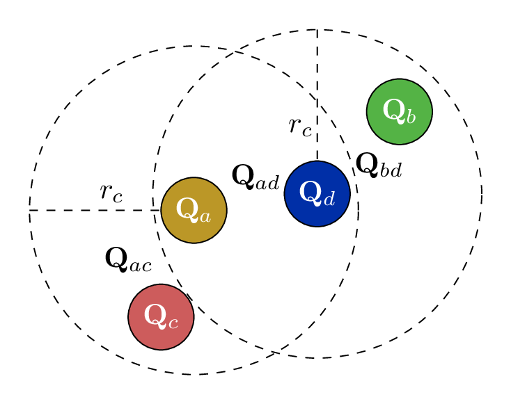

Mori-Zwanzig Formalism
In the Mori-Zwanzig formalism, the dynamics of the coarse-grained (CG) variables follow:
- \( \mathbf{Q} \): Center of mass
- \( \mathbf{P} \): Total momentum
- \( \mathbf{V} \): Velocity
- \( \mathbf{M} \): Mass matrix
- The Mori-Zwanzig formalism is perfectly general.
- In practice, one has to resort to very simple and ad hoc approximations.
- Oversimplicationn of Memory Contribution under-explored.
Ad hoc Approximations
In the Mori-Zwanzig formalism, the dynamics of the coarse-grained (CG) variables follow:
- Markovian-Pairwise (M-DPD)
- \( \dot{\mathbf{P}}_i = \mathbf{F}_i^C - \sum_{j} \mathbf{K}(Q_{ij}) \mathbf{V}_j + \mathbf{R}(t). \)
- Non-Markovian Isotropic (NM-GLE)
- \( \dot{\mathbf{P}} = \mathbf{F}^C - \int_0^t \mathbf{K}(t-s) \mathbf{V}(s) \, ds + \mathbf{R}(t). \)
- Non-Markovian Pairwise (NM-DPD)
- \( \dot{\mathbf{P}}_i = \mathbf{F}^C_{i} - \sum_j \int_0^t \mathbf{K}(Q_{ij}, t-s) \mathbf{V}_{ij}(s) \, ds + \sum_j \mathbf{R}_{ij}(t). \)
- Non-Markovian Manybody (Our Model)
- \( \dot{\mathbf{P}} = \mathbf{F}^C - \bm{\Xi}(\mathbf{Q}) \int_0^t e^{- \bm{\Lambda} (t-s)} \bm{\Xi}(\mathbf{Q})^T \mathbf{V}_{ij}(s) \, ds + \mathbf{R}(t), \)
Important New Issues
- Neural Networks Respect Physical Symmetries
-
Translation: \(\mathbf{\Xi}(\bQ_1 +\mathbf{b},\cdots,\bQ_M +\mathbf{b}) = \mathbf{\Xi}(\bQ_1,\cdots,\bQ_M)\)
-
Rotation: \(\mathbf{\Xi}_{ij}(\mathrm{U}\bQ_1,\cdots,\mathrm{U}\bQ_M) = \mathrm{U}\mathbf{\Xi}_{ij}(\bQ_1,\cdots,\bQ_M)\mathrm{U}^T\)
- Permutation Symmetries: \(\mathbf{\Xi}_{ij}(\bQ_{\sigma(1)},\cdots,\bQ_{\sigma(M)}) = \mathbf{\Xi}_{\sigma(i)\sigma(j)}(\bQ_1,\cdots,\bQ_M)\)
-
Translation: \(\mathbf{\Xi}(\bQ_1 +\mathbf{b},\cdots,\bQ_M +\mathbf{b}) = \mathbf{\Xi}(\bQ_1,\cdots,\bQ_M)\)
- Extensive
\(\mathbf{\Xi}\)( , , )
| Ξ11 | Ξ12 | Ξ13 |
| Ξ21 | Ξ22 | Ξ23 |
| Ξ31 | Ξ32 | Ξ33 |
\(\mathbf{\Xi}\)( , , )
| Ξ11 | Ξ12 | Ξ13 |
| Ξ21 | Ξ22 | Ξ23 |
| Ξ31 | Ξ32 | Ξ33 |
-
Nueral Network Representation
-
\( \hat{ \mathbf Q}^k_i = \mathbf{Q}_i \oplus \sum_{l\in\mathcal{N}_i} f^k(|\mathbf{Q}_{il}|) \mathbf{Q}_{il} \)
-
\( \hat{\mathbf{Q}}_{ij}^{k} = \hat{\mathbf{Q}}_i^{k} - \hat{\mathbf{Q}}_j^{k} \)
- \(\boldsymbol{\Xi}^n_{ij} = \sum_{k=1}^K h_{n,k}(\hat{ \mathbf Q}_{ij}^T \hat{ \mathbf Q}_{ij} ) \hat{ \mathbf Q}_{ij}^k \otimes \hat{ \mathbf Q}_{ij}^k\)
-
\(\bm{\Lambda} = \bm{S} \bm{S}^T + \bm{A}\) where \(\bm{S}\) is symmetric
and \(\bm{A}\) is anti-symmetric.
-
\( \hat{ \mathbf Q}^k_i = \mathbf{Q}_i \oplus \sum_{l\in\mathcal{N}_i} f^k(|\mathbf{Q}_{il}|) \mathbf{Q}_{il} \)
- The construction satisfies the symmetry constraint.
- The construction easy to do simulation. \[ \begin{aligned} \dot{\mb Q} &= \mb M^{-1}\mb P \\ \dot{\mb P} &= -\nabla U(\mb Q) + \bm \Xi(\mb Q)\bm\zeta \\ \dot{\bm\zeta} &= - \bm \Xi(\mb Q)^T \mb V - \bm\Lambda \bm\zeta + \bm \xi(t). \end{aligned} \]


- By choosing the white noise \(\bm\xi(t)\) following \( \left\langle \bm \xi(t) \bm \xi(t') \right\rangle = \beta^{-1}(\bm\Lambda + \bm\Lambda^T) \delta(t-t'), \) model retains the consistent invariant distribution \[ \rho_{\rm eq}(\mb Q, \mb P, \bm\xi) \propto \exp[{-\beta(U(\mb Q) + \mb P^T \mb M^{-1} \mb P/2 + \bm \zeta^T \bm\zeta/2})] \]
Data Collection
- For a given configuration \(\bm {Q}\), theorically, \[ \mb K(\bm {Q}, t) = \mathcal{P}_{\mb Z}[({\rm e}^{\mathcal{Q}_{\bm Z} \mathcal{L} t}\mathcal{Q}_{\bm Z} \mathcal{L}\mb P) (\mathcal{Q}_{\bm Z} \mathcal{L}\mb P)^T], \] where \(\mb Z = [\mb Q,\mb P]\) is CG variable.
- \( \mathcal{P}_{\bm Z} f(\mb z) := \mathbb{E}[f(\mb z) \vert \phi(\mb z) = \bm Z ], \)
- \(\phi(\mb z) \) is the map from full variable \(\mb z = [\mb p,\mb q]\) to CG variable.
- \(\mathcal{Q}_{\bm Z} = \mb I - \mathcal{P}_{\bm Z}\).
- The orthogonal dynamics \({\rm e}^{\mathcal{Q}_{\bm Z} \mathcal{L} t}\) is computationally intractable.
- Introduce the constrained dynamics \(\tilde{z}(t) = {\rm e}^{\mathcal{R}_{\bm Z} \mathcal{L} t}z(0)\) \[ \begin{aligned} \dot{\mb q}_\mu &= \frac{\mb p_\mu}{m_\mu} - \frac{\mb P_i}{M_i} \\ \dot{\mb p}_\mu &= \mb f_\mu - \frac{m_\mu}{M_i} F_i \end{aligned} \]
- \[ \mb K_{\rm MZ}(\bm {Q} , t) = \left \langle \delta \mb F(t) \delta \mb F(0)^T\right\rangle , \] where \(\delta \mb F = \mb F - \mathcal{P}_{\bm Z }(\mb F)\) is the fluctuation force.
Data Collection
- For a given configuration \(\bm {Q}\), theoretically: \[ \mb K(\bm {Q}, t) = \mathcal{P}_{\mb Z}[({\rm e}^{\mathcal{Q}_{\bm Z} \mathcal{L} t}\mathcal{Q}_{\bm Z} \mathcal{L}\mb P) (\mathcal{Q}_{\bm Z} \mathcal{L}\mb P)^T], \] where \(\mb Z = [\mb Q,\mb P]\) represents the coarse-grained (CG) variables.
- The projection operator: \[ \mathcal{P}_{\bm Z} f(\mb z) := \mathbb{E}[f(\mb z) \vert \phi(\mb z) = \bm Z ] \]
- \(\phi(\mb z)\) maps the full variable \(\mb z = [\mb p,\mb q]\) to the coarse-grained variable.
- The orthogonal projection operator is given by: \[ \mathcal{Q}_{\bm Z} = \mb I - \mathcal{P}_{\bm Z} \]
- The orthogonal dynamics \({\rm e}^{\mathcal{Q}_{\bm Z} \mathcal{L} t}\) is computationally intractable.
- To overcome this, we introduce restrained dynamics \(\tilde{z}(t) = {\rm e}^{\mathcal{R}_{\bm Z} \mathcal{L} t}z(0)\): \[ \begin{aligned} \dot{\mb q}_\mu = \frac{\mb p_\mu}{m_\mu} - \frac{\mb P_i}{M_i} \quad \dot{\mb p}_\mu = \mb f_\mu - \frac{m_\mu}{M_i} F_i \end{aligned} \]
- The Mori-Zwanzig (MZ) memory kernel is approximated as: \[ \mb K_{\text{MZ}}(\bm {Q} , t) = \left \langle \delta \mb F(t) \delta \mb F(0)^T\right\rangle, \] where \(\delta \mb F = \mb F - \mathcal{P}_{\bm Z }(\mb F)\) represents the fluctuation force.
Numerical Result
\[ c(t)=\frac{\lt V_i(t) \cdot V_i(0) \gt }{ \lt V_i(0) \cdot V_i(0) \gt } \]
| Model | Temporal | Spatial |
|---|---|---|
| M-DPD | Markovian | Pairwise |
| NM-GLE | Non-Markovian | Isotropic |
| NM-DPD | Non-Markovian | Pairwise |
| NM-MB | Non-Markovian | Manybody |
Numerical Result
\[ C^{xx}(t; r_0) = \mathbb{E}[\mathbf{V}_i(0)\cdot\mathbf{V}_j(t) \vert Q_{ij}(0) = r_0] \]
| Model | Temporal | Spatial |
|---|---|---|
| M-DPD | Markovian | Pairwise |
| NM-GLE | Non-Markovian | Isotropic |
| NM-DPD | Non-Markovian | Pairwise |
| NM-MB | Non-Markovian | Manybody |
Numerical Result
\( G(r, t) \propto \frac{1}{M^2} \sum_{j\neq i}^M \delta(\Vert \mathbf{Q}_i(t) - \mathbf{Q}_j(0)\Vert - r) \).
| Model | Temporal | Spatial |
|---|---|---|
| M-DPD | Markovian | Pairwise |
| NM-GLE | Non-Markovian | Isotropic |
| NM-DPD | Non-Markovian | Pairwise |
| NM-MB | Non-Markovian | Manybody |
Numerical Result
\[ \begin{split} C_L(t) &= \langle \tilde{u}_1(t)\tilde{u}_1(0)\rangle \\ \tilde{\mb u} &= \frac{1}{M}\sum_{j=1}^M \mb V_j {\rm e}^{i\mb k \cdot \mb Q_j} \end{split} \]
| Model | Temporal | Spatial |
|---|---|---|
| M-DPD | Markovian | Pairwise |
| NM-GLE | Non-Markovian | Isotropic |
| NM-DPD | Non-Markovian | Pairwise |
| NM-MB | Non-Markovian | Manybody |
Numerical Result
\[ \begin{split} C_L(t) &= \langle \tilde{u}_2(t)\tilde{u}_2(0)\rangle \\ \tilde{\mb u} &= \frac{1}{M}\sum_{j=1}^M \mb V_j {\rm e}^{i\mb k \cdot \mb Q_j} \end{split} \]
| Model | Temporal | Spatial |
|---|---|---|
| M-DPD | Markovian | Pairwise |
| NM-GLE | Non-Markovian | Isotropic |
| NM-DPD | Non-Markovian | Pairwise |
| NM-MB | Non-Markovian | Manybody |